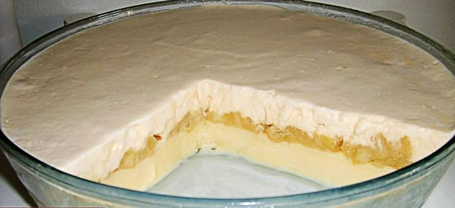
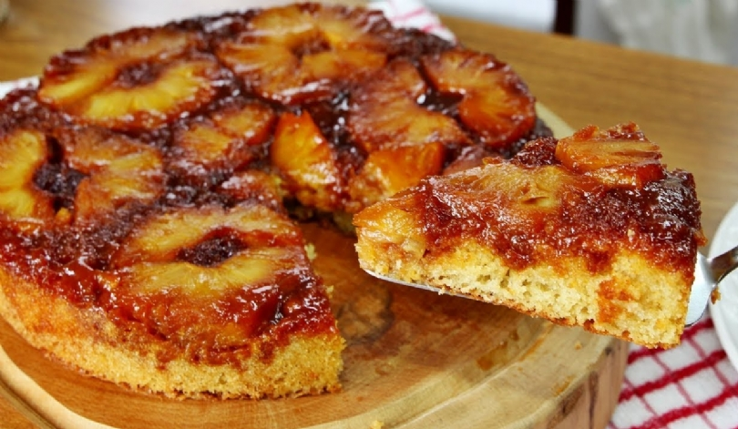

Home | Sobre |
Cultivo |
Benefícios |
Receitas |
Contato |
Delícia de Abacaxi |
|
Ingredientes - Doce de Abacaxi• 1 abacaxi cortado em cubos• Água• Açúcar a gosto |
|
Ingredientes - Creme de Abacaxi• 1 lata de leite condensado• 1 lata de leite de vaca, a mesma medida usada no leite condensado• 3 gemas de ovos |
|
Ingredientes – Cobertura• 3 claras batidas em neve• 3 colheres de sopa de açúcar• 1 lata de creme de leite |
|
Modo de Preparo1. Em uma panela, coloque os ingredientes do doce de abacaxi e deixe no fogo até chegar no ponto de doce.2. Depois deixe esfriar um pouco, despeje na forma ou tabuleiro e reserve.3. Em seguida prepare o creme, levando ao fogo, mexendo até ficar homogêneo.4. Depois despeje em cima do doce de abacaxi que estava reservado.5. Bata as claras em neve, acrescente o açúcar, o creme de leite e mexa um pouquinho com uma colher.6. Coloque por cima do doce reservado, leve ao freezer e sirva bem gelado.7. Fica parecendo um sorvete. |
 |
Bolo de Abacaxi |
||
Ingredientes da Cobertura• 1 xícara (chá) de açúcar• meia xícara (chá) de água fervente• 7 rodelas de abacaxi |
||
Ingredientes Massa• 3 ovos• 1 xícara (chá) de óleo• 1 e meia xícara (chá) de açúcar• 2 xícaras (chá) de farinha de trigo• 1 colher (sopa) de fermento em pó |
||
Modo de Preparo - Cobertura1. Em uma panela derreta o açúcar até formar um caramelo claro (não deve ficar escuro para não amargar a calda).2. Coloque a água fervente e deixe ferver até dissolver os torrões de açúcar e formar um caramelo.3. Unte uma forma redonda (26 cm de diâmetro) com manteiga e despeje o caramelo.4. Disponha as rodelas de abacaxi e reserve. |
Modo de Preparo - Massa1. Em um recipiente, misture os ovos e o óleo.2. Acrescente o açúcar e a farinha de trigo e mexa até obter uma mistura homogênea.3. Adicione o fermento em pó e misture.4. Despeje a mistura, com cuidado, sobre forma reservada e leve para assar em forno médio (180°C), preaquecido, por cerca de 40 minutos ou até dourar.5. Espere amornar, desenforme e sirva. |
 |
Suco Detox de Abacaxi |
|
Ingredientes• 1 folha de couve• 1 rodela de abacaxi (média)• 4 folhas de hortelã• 100 ml de água |
|
Modo de Preparo1. Bata os ingredientes no liquidificador até triturar bem e sirva imediatamente. |